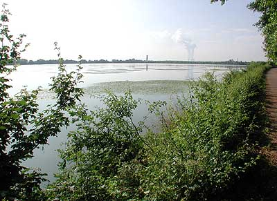
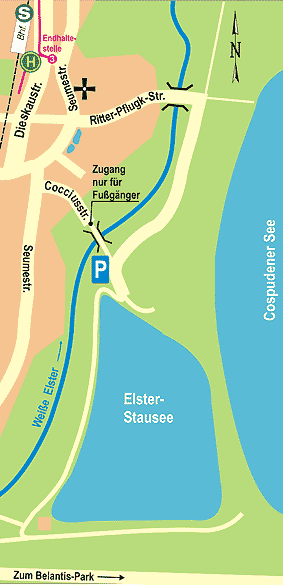
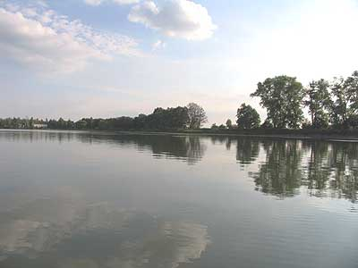

Naherholung am ElsterstauseeDer Elsterstausee liegt seit 2012 trocken. Der Zustand der Gewässersohle und der wasserwirtschaftlichen Anlagen ist für eine erneute Flutung denkbar schlecht. Der Ortschaftsrat unterstützt eine fortwährende Nutzung des Elsterstausees als attraktives Naherholungsgebiet für die Bewohner der Ortsteile. Informationen zum Erhalt des Sees finden Sie beim Förderverein unter elsterstausee.de |
 |
Lage
Im Süden der Gemarkung Knauthain liegt der Elsterstausee, der nach seiner Entstehung viele Jahre lang das größte stehende Gewässer im heute seenreichen Leipziger Umland war. Die stadtnahe Lage des Elsterstausees lädt aber vor allem zu einer Radtour ein.

Nutzung
Seit der ersten Flutung nach seiner Fertigstellung wird der Elsterstausee von den Leipzigern als Badesee genutzt. Doch das schon in den ersten Plänen vorgesehene Freibad wird erst nach dem 2. Weltkrieg gebaut. Bis in die 70er Jahre war es die erste Adresse für Badelustige. Später machten der Kulkwitzer See, die Kiesgruben bis hin nach Naunhof und ab 2000 schließlich der Cospudener See dem Elsterstausee Konkurrenz. Heute nutzen vor allem Familien mit kleinen Kindern die schattigen Liegewiesen am Nordufer und den flachen Strand mit dem sich schnell erwärmenden Wasser. Auf dem Elsterstausee fuhren viele Jahre lang die Boote der Leipziger Segler, die Kutter des Seesportclubs und bis in die 70er Jahre ein Fahrgastschiff. Heute sind die Wassersportler auf die größeren Gewässer Kulkwitzer See und Cospudener See abgewandert. Nur der Bootsverleih Wittig bot noch bis zuletzt die Möglichkeit, bei einer Kahnpartie zu erleben wie sich die Ruhe auf dem Wasser mit dem Rauschen des Windes vermischt. Die bedeutenste Nutzung war wohl aber die Fischerei. Schon 1935/36 wurden über einhunderttausend Karpfen, Schleie und Aale in den See gesetzt. Von 1949 bis 1990 war der Fischermeister Rudolf Garbe mit Leib und Seele für die Bewirtschaftung des Elsterstausees verantwortlich. Während der gesamten Zeit blieb der Karpfen der Hauptwirtschaftsfisch. Eine Rekordernte wurde 1974 eingeholt - 310 Tonnen Speisefische gingen in die Netze. In den Jahren 1949/50 wurde das erste Fischereigehöft in privater Regie errichtet. Ab 1955 erfolgte die Bewirtschaftung unter der Hoheit des VEB Binnenfischerei Wermsdorf. Im Zuge der Braunkohlenförderung wurde der Stausee halbiert und der alte Fischereihof 1980 abgebaggert. Nach der Verkleinerung des Elsterstausees entstand an der Südseite des Sees ein neuer Fischereistützpunkt, der heute privat bewohnt und teilweise als Wirtschaftshof des Anglerverbandes Leipzig e.V. genutzt wird. Die großen Abfischungen im Herbst jeden Jahres waren in allen Zeiten Anziehungspunkt für unzählige Besucher. Fischerei in der Großstadt hautnah erleben - das gibt es nicht oft in Deutschland! Diese Tradition wurde durch die Gemeinschaft der Angler und Fischer zur Gewässerbewirtschaftung e.V. mit den großen Schaufischen am Elsterstausee zeitweilig wiederbelebt. Auch künftig könnte zum Beispiel eine extensive Fischerei natürlich gewachsene Karpfen für das Weihnachts- oder Silvestermahl der Leipziger Bürger liefern.

Geschichte
Im Zusammenhang mit umfangreichen Regulierungs- und Hochwasserschutzmaßnahmen an Leipziger Flüssen begann im Jahr 1933 der Bau des Elsterstausees im Rahmen einer der ersten, großen Arbeitsbeschaffungsmaßnahmen im Raum Leipzig. Bis zu 900 vorher meist erwerbslose Menschen arbeiteten am Aushub des Sees und am Bau der Dämme. Schon im Juli 1934 waren die umfangreichen Arbeiten abgeschlossen. Mit dem Elsterstausee entstand im von zahlreichen Flüssen geprägten Leipziger Umland erstmals ein großes stehendes Gewässer. Mit ursprünglich 105 Hektar Fläche war der Stausee zum einen etwa so groß wie der bekannte Berliner Wannsee und zum anderen fast 30 Jahre lang das größte stehende Gewässer im Leipziger Umland. Damals staute der rund 1,5 - 2,0 Meter tiefe See den aus Profen kommenden Elstermühlgraben, der in einem Düker unter der Weißen Elster durchgeführt wurde. Sein Wasser füllte den See und man erhoffte sich einen Reinigungseffekt. Anschließend wurde das Wasser wieder unter der am Stausee vorbeifließende Elster durchgeführt und in den alten Elstermühlgraben abgegeben. Mitte der 70er Jahre stand die Zukunft des Stausees das erste Mal auf dem Spiel. Im Zuge der Ausweitung des Tagebau Zwenkau sollte auch die Kohle unter dem Elsterstausee abgebaut werden. Letztendlich wurde die Weiße Elster weiträumig nach Westen umverlegt und der Stausee 1977 um die Hälfte verkleinert. Heute mündet der Mühlgraben bei Kleindalzig in die umverlegte Weiße Elster und erreicht den Stausee nicht mehr. Das nun ca. 50 Hektar große Gewässer musste künstlich abgedichtet werden und kann nur noch über Pumpen aus der tieferliegenden Elster befüllt werden. Eine zweite bedrohliche Situation für das bei der Leipziger Bevölkerung beliebte Gewässer entstand im Jahr 2002. Im Zusammenhang mit der Verlegung der Elektroleitungen zum Belantispark kappte der Stromversorger die Zuleitung für die Pumpstation. Das Wasser war abgegraben. Der massive Druck von unzähligen Leipziger Bürgern zum Erhalt des Elsterstausees ermöglichte in Zusammenarbeit mit dem Leipziger Umweltamt eine Verpachtung an die GAF. Anschließend wurde durch private Initiative ein neuer Stromanschluss gelegt, die Pumpen von der Fachfirma Polzin gewartet und repariert, der Schieber in der Elsterwasserzuleitung repariert und im Umfeld viel aufgeräumt. Besonders schwierig war die Reparatur der noch aus dem Jahre 1934 stammenden Ablaufeinrichtung. Dazu musste der See im Winter 2005/06 ohne Wasser bleiben.